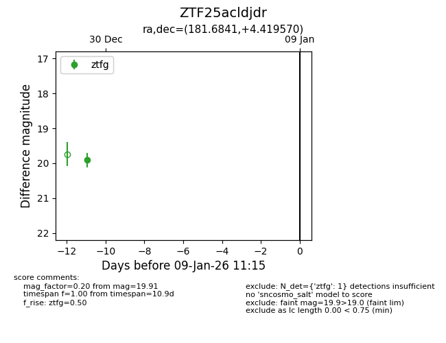
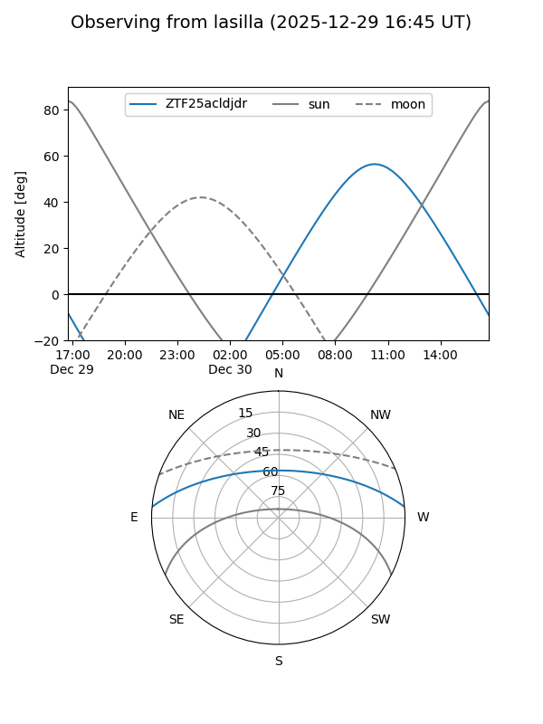
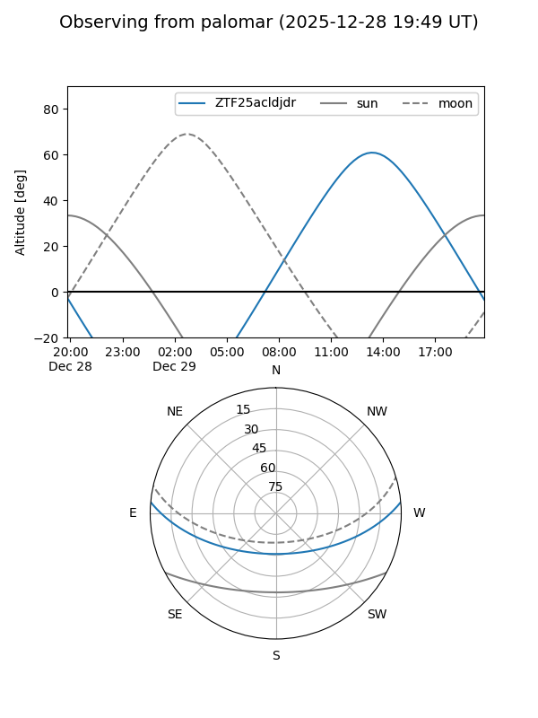

ZTF25acldjdr
Target ZTF25acldjdr at 2025-12-31 18:01
Aliases and brokers:
FINK: link
Lasair: link
ALeRCE: link
alt names
ZTF25acldjdr (ztf,fink_ztf)
Coordinates:
equatorial (ra, dec) = 181.6841,+4.41957
equatorial (HMS+DMS) = 12:06:44.18,+04:25:10.45
galactic (l, b) = (275.8201,+64.91154)
Flags:
Photometry:
last ztfg=19.91
1 ztfg detections
Lightcurve

Visibility


Additional plots